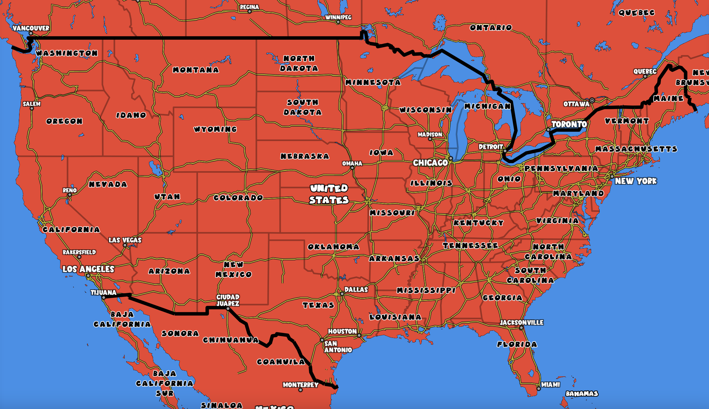
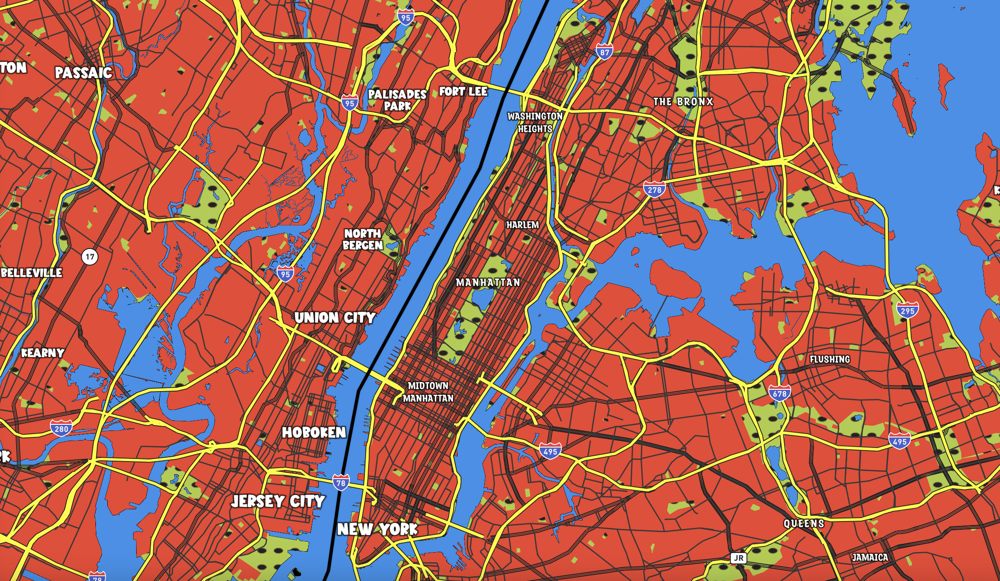
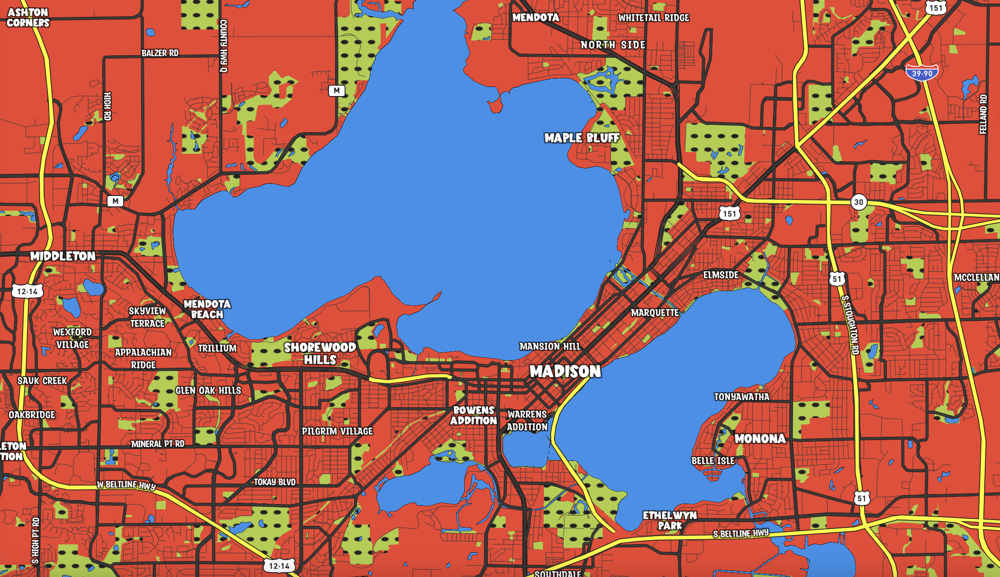
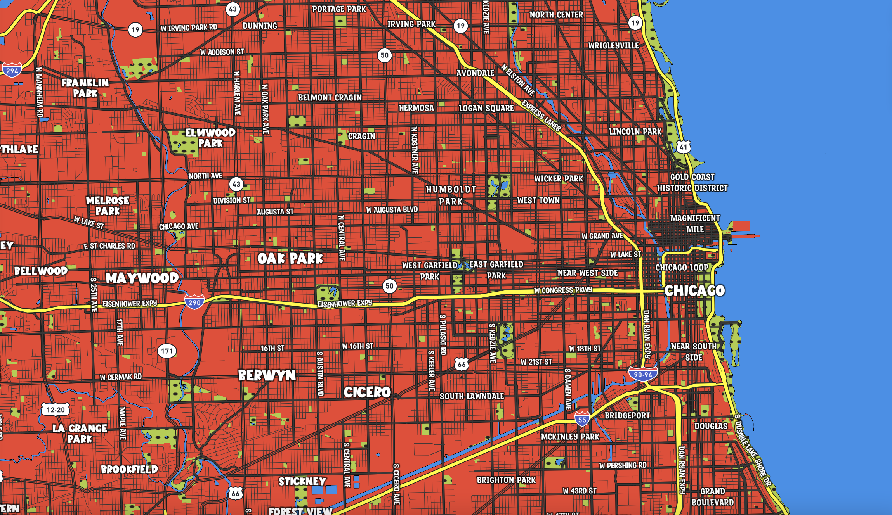
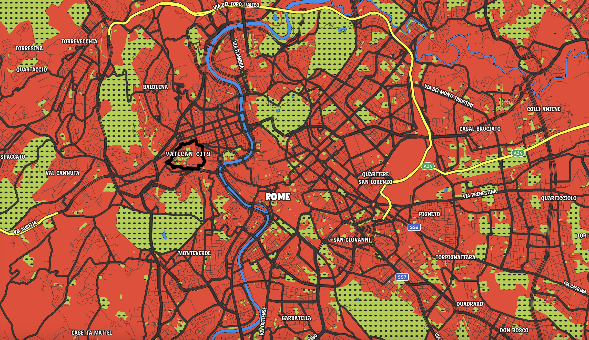

Keith Haring Inspired Map
My map is inspired by the work of street artist Keith Haring.

I drew inspiration from works like these. I admire how Haring used few but very vibrant colors to create world renowned art. I also really like the thick, black lines to separate different components of the piece.
As you zoom in on the map, more details become visible.




When you get to the city level, parks turn green and have an added texture.
This theme focuses on urban areas, lets look at some different cities.




Here's a smaller city, Madison, Wisconsin
A bigger US city, Chicago
Rome, Italy
A rural town, Hays, Kansas
Check out the full map here!
Credits: Julian Callegari
Map created with Mapbox Studio
Data from openstreetmap